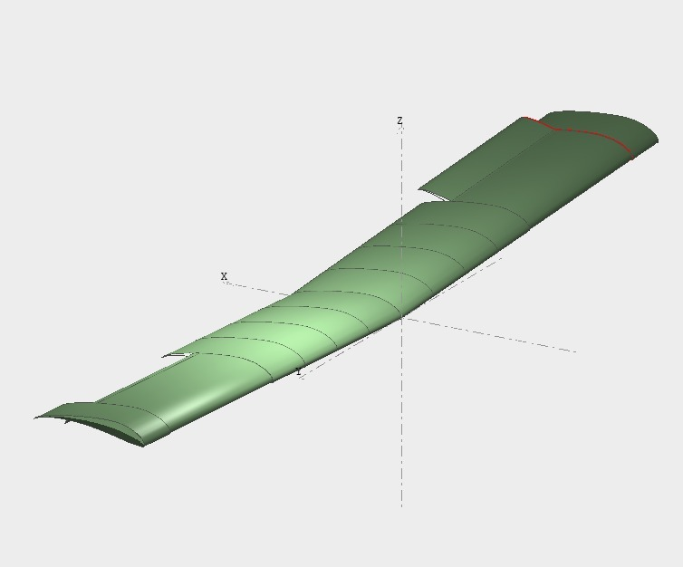
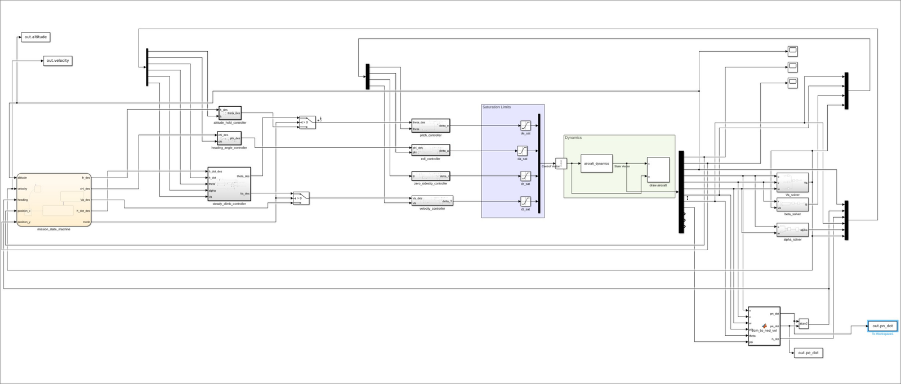
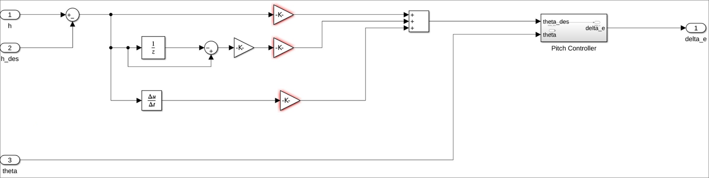
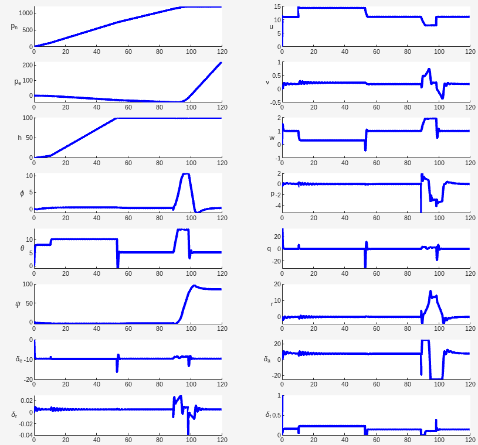

1.The brief
The Canadian Arctic is about 40% of the country's landmass and home to under 1% of its people. Surveillance and rescue flights there are expensive, and in the worst weather they are often not flown. The course project framed this as a call for proposals: two low-cost UAS designs for the Department of National Defence. One was a fixed-wing patroller for long-range reconnaissance. The other was a multirotor courier for 2 km package runs between posts. This page covers the patroller. The multirotor is described in project 09 and summarized at the end of this page.
Several of the patroller requirements conflict with one another:
| Requirement | Target | Design impact |
|---|---|---|
| Payload | 0.5 kg of sensors | Carried on top of all fuel and batteries |
| Range | ≥25 km, more scores higher | Competes directly with the weight and cost caps |
| Propulsion mass | ≤40% of total weight | Rules out adding more battery to extend range |
| Stall speed | ≤10 m/s | Needed for hand launch; sets the wing loading |
| Launch | Hand launch or VTOL | No runway at remote posts |
| Cruise | 100 m altitude | Mission profile for survey passes |
| Stability | Passively stable, static and dynamic | Minimizes control effort in gusty air |
| Cost | ≤$400 CAD propulsion + fuel/battery | Every part is sourced against this line |
2.Choosing the power system
The power system took the most research, because each option has a different weakness in Arctic conditions:
- LiPo batteries are quiet, efficient, and cheap, but their energy density is far below hydrocarbon fuel, and their performance drops sharply in the cold. At −20 °C, usable capacity can fall to around 50% of rated, and charging below 0 °C can permanently damage the pack.
- Small combustion engines have the energy density and tolerate cold better, but they add moving parts and maintenance. The market for small UAS engines is also thin. The smallest suitable engine we could source from a Canadian supplier, a DLE-20 at $418 CAD, exceeded the propulsion budget on its own, before a propeller, fuel system, or tank.
- Hydrogen fuel cells offer roughly three times battery endurance, silent, and zero emissions. But commercial UAV systems run $3,000 to $8,000 per unit, and most are rated only to about −5 °C, which rules them out for operation at −20 °C.
Within the budget, the patroller is electric, and cold is treated as a design constraint. That means budgeting range on derated cold-weather battery capacity and planning thermal management for the pack. The proposal also preferred domestic suppliers wherever a part was available in Canada. The multirotor, with a $2,000 whole-system budget, could use more capable components but needs the same thermal management.
3.Wing aerodynamics
The aerodynamics started from first principles and moved to numerical tools, checking each against the last. Thin-airfoil theory gave closed-form lift for a symmetric NACA 0012 and a cambered NACA 2412. XFOIL, run through XFLR5 v6.61 at fixed Reynolds and Mach number, then gave the viscous 2D polars. The cambered section produces more lift at every angle of attack, as the theory predicts.
For the finite wing, XFLR5's lifting-line solver gave the 3D lift-curve slope from −5° to 20° and the spanwise lift distribution. The finite-wing slope is lower than the 2D value because of induced downwash. The loading is nearly elliptical with the expected fall-off at the tips. A taper-ratio study then showed that tapering the planform pushes the load closer to elliptical and slightly raises the lift-curve slope. It also showed the limits of the method. Lifting-line theory assumes attached, linear flow, so the solver stops converging above about 19° angle of attack; this indicates the onset of stall but does not model it.

4.Propeller and performance modelling
Propeller choice drives both range and the budget, so we wanted a propeller model we could trust before comparing candidates. We implemented momentum-blade element theory in MATLAB. Blade geometry came from the UIUC propeller database, and we assumed a constant section drag coefficient (cd = 0.05), a lift-curve slope of 5.2 rad⁻¹, and a −6° zero-lift angle. We then validated the model against UIUC's measured wind-tunnel data for an APC SF 9×4.7 at 6000 RPM, from 0 to 17 m/s.
The model reproduces the trends and correctly places peak efficiency at an advance ratio of J ≈ 0.3 to 0.4. But it overpredicts thrust by 20 to 25% across the range (24.5% static) and overpredicts torque too. It also predicts negative thrust past J = 0.66, while the real propeller still produces thrust at 0.75. We traced each error to a model assumption:
- constant drag, which ignores Reynolds effects
- linear aerodynamics, so no stall
- uniform inflow
- no tip losses
- blade geometry sampled at discrete stations
We therefore used the model to rank candidate propellers and relied on measured data for absolute thrust.
For performance, we built the closed-form range and endurance relations for both propeller and jet aircraft on a parabolic drag polar over an ISA atmosphere model. The atmosphere runs to 20 km, with a linear lapse to 11 km and isothermal above. We then swept range, endurance, maximum rate of climb, and the velocity-altitude envelope against altitude. On the multirotor side, hover endurance was computed from a battery discharge model rather than nameplate capacity, which matters given the reduced capacity in cold conditions.
5.Flight control in Simulink
The simulation is a full nonlinear 6-DoF fixed-wing model in Simulink, following Beard and McLain's Small Unmanned Aircraft formulation. A mission state machine sequences the flight and hands setpoints to seven PID loops. Four inner loops drive the four control devices: elevator, ailerons, rudder, and throttle. Three outer loops handle altitude hold, steady climb, and heading. Every controller uses derivative on measurement, so a step in the setpoint doesn't produce a derivative kick.
- Altitude has two modes, hold and climb. Each has its own PID, and both output a pitch command. The state machine switches between them and uses the same mode flag to shut off the hold loop's integrator while climbing, so it doesn't wind up.
- Pitch drives the elevator, limited to ±30°.
- Heading turns course error into a roll command. Course is computed from the north and east velocities with atan2. The error is wrapped through atan2(sin, cos), so the aircraft always turns the shorter way and the error does not jump at ±180°. Banking reduces the vertical component of lift, so the pitch command is scaled by 1/cos(φ); this load-factor compensation holds altitude through the turn.
- Roll drives the ailerons for coordinated turns, limited to ±25°. Sideslip is regulated to zero through the rudder, also limited to ±25°. Airspeed drives throttle directly, from 0 to 1.


6.Flying the mission
The state machine flies a complete patrol leg without pilot input. It starts from rest, takes off, and climbs steadily to 100 m. It then cruises 500 m, holding altitude with under 2% overshoot and little steady-state error. It then slows to the design stall speed of 8.4 m/s and flies a coordinated turn at 8 to 10° of bank. The heading setpoint is ramped at the turn rate ω = Va/R rather than stepped. That gives a turn radius of 38.9 to 48.8 m before the aircraft settles onto its new heading and returns to cruise, still at 100 m.

7.The multirotor courier
The courier's controller uses PD inner loops on body rates, limited to 1.5 rad/s. Its outer loops command accelerations, saturated at ±2 m/s². Pitch and roll setpoints are computed from the full nonlinear relation between commanded acceleration, yaw, and thrust rather than a small-angle approximation, so the controller remains valid at larger attitude angles, although the delivery route does not require them. It followed the multi-leg route with minimal overshoot and low attitude oscillation. The full multirotor write-up (dynamics, rotor mixing, controller, mission results and power modelling) is project 09. The quadrotor control work from the companion course is project 05.
8.Toolchain
- MATLAB: blade-element propeller model, performance sweeps, ISA atmosphere, plotting
- Simulink: 6-DoF fixed-wing and quadrotor dynamics, controllers, mission state machines
- XFLR5 v6.61 / XFOIL: 2D airfoil polars, lifting-line finite-wing and taper analysis
- UIUC Propeller Data Site: blade geometry and wind-tunnel CT / CQ for validation
- Python: supporting performance calculations
- CAD: wing model with control surfaces
9.Credits
Team project with Feiyang Wu and Clarence Zhang.